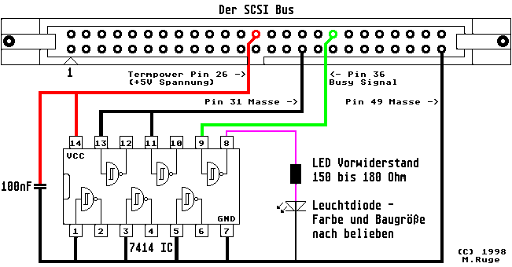

Previous
Next
TOC
Die SCSI BUSY LED
Für Festplatten die über keine Anschlußmöglichkeit für eine Aktivi-
tätsled verfügen, kann man auch folgende Lösung in betracht ziehen.
Die Busy Leitung vom SCSI Bus über ein Gatter eines 7414 ICs führen
und am Gatterausgang eine Leuchtdiode (
LED) samt dazugehörigen Vor-
widerstand anlöten, dann hat man die gewünschte Funktion zwar für
den kompletten SCSI Bus (aber das sollte ja keine allzugroße Ein-
schränkung sein).
Anmerkung:
Da der Spannungspegel auf der Termpower zwischen 4.0 Volt und 5.25
Volt variieren darf (nach der SCSI Spezifikation), kann es durchaus
passieren das im schlechtesten Fall die Schaltung nicht funktioniert
und den SCSI Bus blockiert. In diesem Fall muß die Spannungsversor-
gung des 7414 ICs von der +5V Spannungsversorgung des Netzteils
übernommen werden und die Verbindung zum Pin 26 des SCSI Bus unter-
brochen werden.

Kapitel Die SCSI BUSY LED, Seite 1